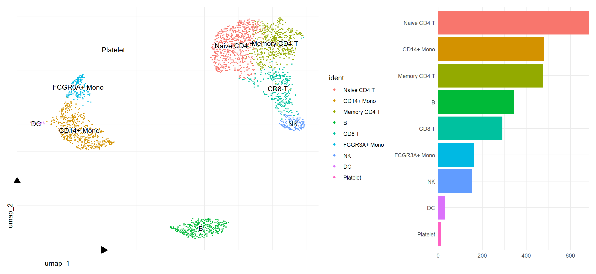
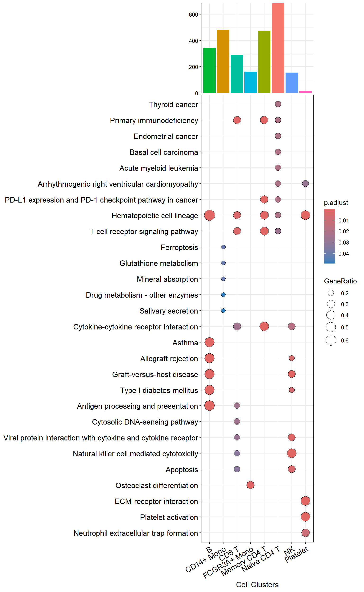
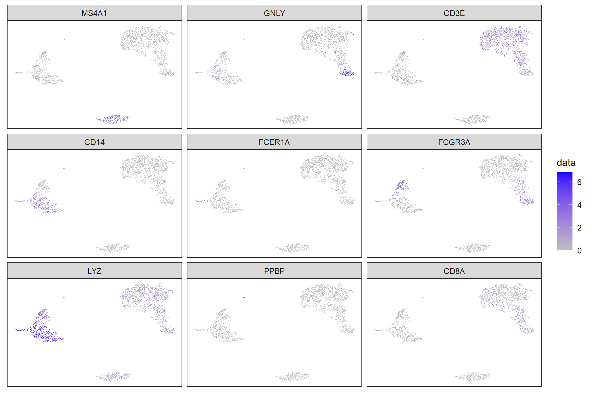
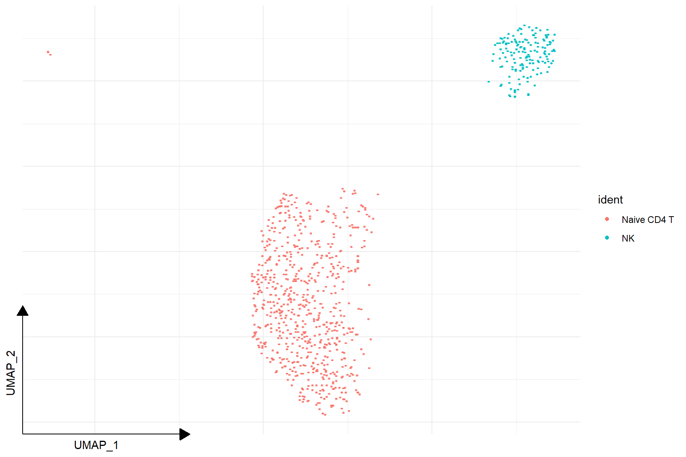
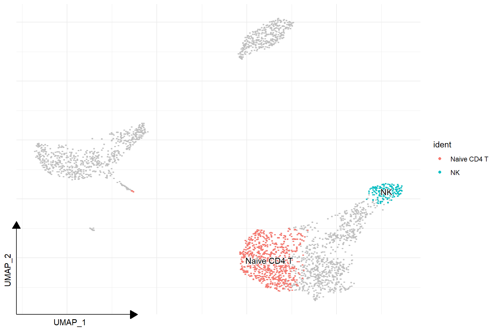
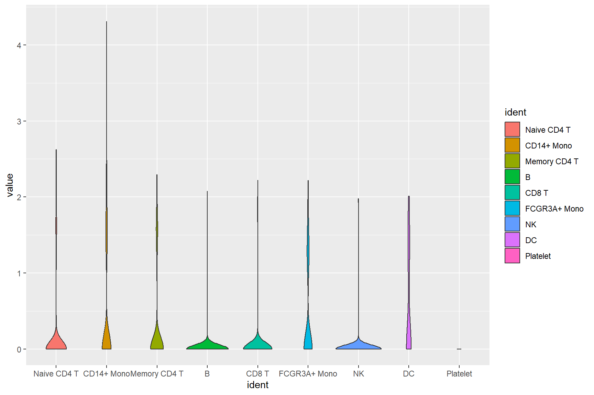
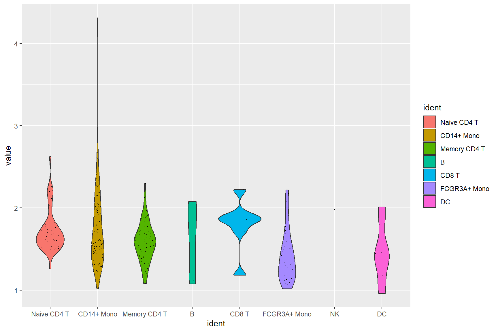
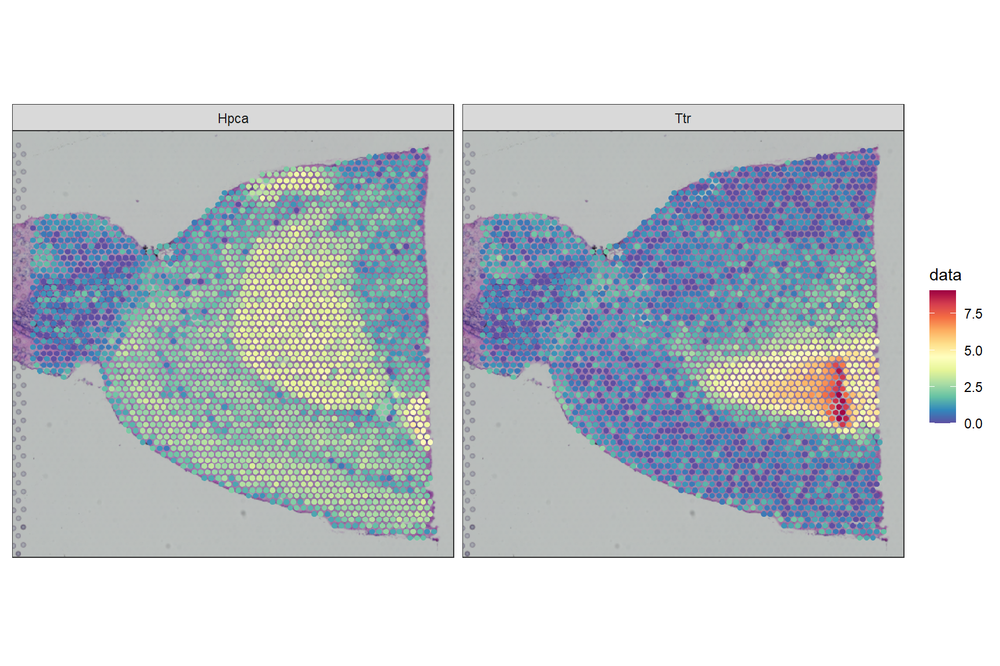

1 Visualizing Seurat objects
library(Seurat)
dir = "data/filtered_gene_bc_matrices/hg19"
pbmc.data <- Read10X(data.dir = dir)
pbmc <- CreateSeuratObject(counts = pbmc.data, project = "pbmc3k",
min.cells=3, min.features=200)
pbmc## An object of class Seurat
## 13714 features across 2700 samples within 1 assay
## Active assay: RNA (13714 features, 0 variable features)
## 1 layer present: countspbmc[["percent.mt"]] <- PercentageFeatureSet(pbmc, pattern = "^MT-")
pbmc <- subset(pbmc,
subset = nFeature_RNA > 200 & nFeature_RNA < 2500 & percent.mt < 5
)pbmc <- NormalizeData(pbmc, normalization.method = "LogNormalize",
scale.factor = 10000)
pbmc <- ScaleData(pbmc)pbmc <- FindVariableFeatures(pbmc, selection.method = "vst",
nfeatures = 2000)
pbmc <- RunPCA(pbmc, features = VariableFeatures(object = pbmc))
pbmc <- RunUMAP(pbmc, dims = 1:10)## Modularity Optimizer version 1.3.0 by Ludo Waltman and Nees Jan van Eck
##
## Number of nodes: 2638
## Number of edges: 95927
##
## Running Louvain algorithm...
## Maximum modularity in 10 random starts: 0.8728
## Number of communities: 9
## Elapsed time: 0 seconds## Assigning cell type identity to clusters
cluster.ids <- c("Naive CD4 T", "CD14+ Mono", "Memory CD4 T",
"B", "CD8 T", "FCGR3A+ Mono", "NK", "DC", "Platelet")
names(cluster.ids) <- levels(pbmc)
pbmc <- RenameIdents(pbmc, cluster.ids)1.1 Dimensional reduction plot
# DimPlot(pbmc, reduction = "umap",
# label = TRUE, pt.size = 0.5)
library(ggplot2)
library(ggsc)
sc_dim(pbmc) + sc_dim_geom_label()
p <- sc_dim(pbmc) +
sc_dim_geom_label(geom = shadowtext::geom_shadowtext,
color='black', bg.color='white')
p
The number of cells in each clusters can be easily Visualized using sc_dim_count(). The colors of the bar plot is consistent with the dimensional reduction plot.

library(dplyr)
top20 <- pbmc.markers |>
group_by(cluster) |>
filter(avg_log2FC > 1) |>
slice_head(n = 20) |>
ungroup()
library(clusterProfiler)
library(enrichplot)
gg <- bitr(top20$gene, 'SYMBOL', 'ENTREZID', 'org.Hs.eg.db')
top20 <- merge(top20, gg, by.x='gene', by.y = 'SYMBOL')
kk <- compareCluster(ENTREZID~cluster, data = top20, fun=enrichKEGG)g <- dotplot(kk, label_format=100) +
aes(x=sub("\n.*", "", Cluster)) +
xlab("Cell Clusters") +
ggtitle(NULL) +
theme(axis.text.x = element_text(angle=30, hjust=1))
p3 <- p2 + coord_cartesian() +
ggfun::theme_noxaxis() +
xlab(NULL)
insert_top(g, p3, height=.2)
1.2 Visualize ‘features’ on a dimensional reduction plot
features = c("MS4A1", "GNLY", "CD3E",
"CD14", "FCER1A", "FCGR3A",
"LYZ", "PPBP", "CD8A")
# FeaturePlot(pbmc,'CD4')
sc_feature(pbmc, 'CD4')

Here is the real ‘features’ on dimensional plot

sc_dim(pbmc, alpha=.3) +
ggnewscale::new_scale_color() +
sc_dim_geom_feature(pbmc, features, mapping=aes(color=features)) +
scale_color_viridis_d()

sc_dim(pbmc, alpha=.3) +
ggnewscale::new_scale_color() +
sc_dim_geom_feature(pbmc, features, mapping=aes(color=features)) +
scale_color_viridis_d()
1.4 Visualize selected clusters

sc_dim(pbmc, color='grey') +
sc_dim_geom_sub(subset=selected) +
sc_dim_geom_label(geom = shadowtext::geom_shadowtext,
mapping = aes(subset = ident %in% selected),
color='black', bg.color='white')
1.5 Violin plot of gene expression

## allows applying an user-defined function to transform/filter the data
sc_violin(pbmc, 'CD4', .fun=function(d) dplyr::filter(d, value > 0)) +
ggforce::geom_sina(size=.1)
#VlnPlot(pbmc, features)
sc_violin(pbmc, features) +
theme(axis.text.x = element_text(angle=45, hjust=1))
1.6 Spatial features
library(SeuratData)
# InstallData("stxBrain")
brain <- LoadData("stxBrain", type = "anterior1")
# Normalization
brain <- SCTransform(brain, assay = "Spatial", verbose = FALSE)
## SpatialFeaturePlot(brain, features = c("Hpca", "Ttr"))\
sc_spatial(brain, features = c("Hpca", "Ttr"), image.mirror.axis = 'v')